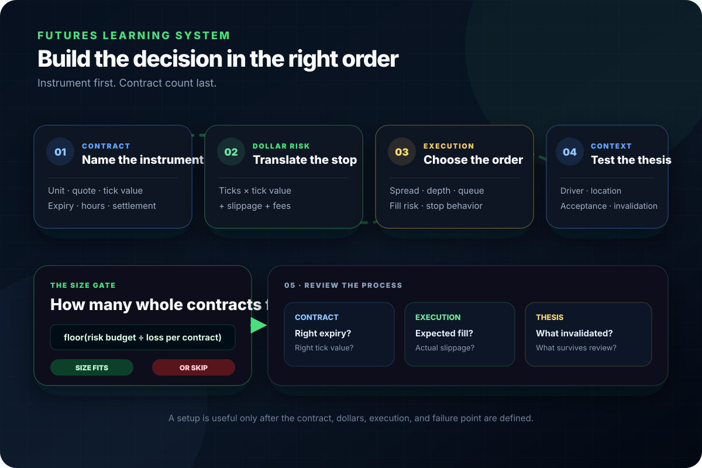

What Is a Futures Contract?
Plain-English explanation of what a futures contract actually is and what…
Futures basics directory
Updated August 13, 2026
Search the complete 458-guide Futures Basics library by contract, market, or trading problem. Use the filters to browse mechanics, risk, execution, lifecycle topics, currencies, metals, equity indexes, and livestock.

Complete Futures Basics index
The directory includes every indexed guide in this section. Search from the field above, select a category, or browse the first results and load more.
458 linked guidesBrowse every guide directly—no account or sign-in required.
Plain-English explanation of what a futures contract actually is and what…
Learn the key futures contract specifications—tick size, tick value, multiplier, expiration, trading hours—and how each one affects your risk and strategy.
Understand futures ticks, points, tick size, and tick value. Compare ES, MES, NQ, MNQ, RTY, CL, GC, and 6E, then calculate dollar P&L.
Clear explanation of the difference between limit orders and market orders, when to use each, and the actual trade-offs for futures traders.
Learn how futures trading hours work, what Globex is, and why session changes affect volatility, liquidity, and your strategy.
Learn futures expiration, last trade, settlement, delivery, volume migration, rolling, contract codes, and continuous charts with examples and a roll planner.
A clear breakdown of what actually moves ES, NQ, MES, MNQ, and other futures contracts. Real catalysts explained.
Verify current 6A contract size, tick value, P&L, notional exposure, physical delivery, roll mechanics, margin limits and Micro M6A differences.
Compare 6A futures with spot AUD/USD across venue, pricing basis, expiry, roll, leverage, execution data, counterparty structure and practical fit.
Build and reject 6B breakout candidates with predeclared level provenance, market-quality gates, triggers, invalidation, position math and review fields.
Verify current CME 6B and M6B units, tick values, P&L math, listed months, expiry, physical delivery and the limits of every margin number.
Turn a clean 6B pullback into measurable variables, a reproducible event study, realistic execution tests, and explicit failure conditions.
Test conditional 6C co-movement with equities, volatility, credit, oil, the U.S. dollar and rates without assigning CAD a permanent risk label.
Size standard 6C or Micro MCD positions from an invalidation and loss budget, then stress slippage, gaps, fees and changing margin requirements.
Verify current standard 6C and Micro MCD contract size, tick value, P&L math, listed months, expiry, physical delivery, trading hours, roll and margin limits.
Define and test 6C compression and expansion events with matched baselines, forward horizons, roll and event controls, costs and holdouts.
Compare 6C, 6E and 6J quotation, standard-contract mechanics, policy channels, macro exposure and analytical fit without ranking an easiest contract.
Learn how ATR is calculated for 6E Euro FX futures, how timeframe and session choices change it, and how to use volatility regimes without inventing direction.
Separate real 6E reopening gaps from contract-roll jumps, vendor gaps, and event moves, then test gap behavior without invented fill-rate claims.
Map 6E liquidity with traded volume, displayed depth, spread, slippage and repeatable reference levels—without pretending candles reveal institutions.
Read 6E market structure with fixed swing, trend, range, acceptance, rejection and failed-break rules—without order-block or smart-money mythology.
Calculate 6E ticks, pips, P&L and notional exposure. Verify Euro FX contract size, margin mechanics, physical delivery and M6E differences.
Compare CME 6E futures with OTC EUR/USD spot, understand basis and venue structure, and test lead-lag claims with synchronized market data.
Current CME 6J Japanese yen futures specifications, exact tick and P&L math, hours, listed months, last trade, physical delivery, margin and roll risk.
Understand 6J time-of-day behavior without fake rankings: realized volatility, volume, depth, spreads, event windows, DST, maintenance and roll.
Compare 6J yen and 6S Swiss franc futures: current contract specs, BOJ and SNB policy channels, safe-haven mechanics, execution and roll.
6J futures versus USD/JPY spot: reciprocal quotes, centralized versus OTC execution, ticks versus pips, futures basis, expiry and roll.
A full breakdown of 6L Brazilian Real futures margin requirements, including day trading margin, overnight margin, and risk implications.
A direct guide to why the 6L Brazilian Real futures order book feels thin, how liquidity actually works on this contract, and how traders should adapt execution to avoid…
A clear breakdown of 6L Brazilian Real futures tick size, tick value, contract size, and how each impacts your risk on every trade.
A full breakdown of 6L Brazilian Real futures volatility, ATR behavior, typical swing size, and risk management techniques that actually work.
The most common data traps traders fall into when analyzing USD/MXN 6M futures, including inaccurate candles, distorted volatility, and false liquidity signals.
A full breakdown of 6M margin requirements, including day margin, overnight margin, SPAN risk, and why Peso futures tempt traders into oversizing.
A full explanation of USD/MXN seasonal patterns, why the Peso strengthens or weakens at certain times of year, and how traders use these cycles in 6M futures.
Why slippage is worse on 6M USD/MXN futures than major FX contracts, and exactly how to avoid losing money to thin liquidity and orderflow gaps.
A complete breakdown of 6M tick size, tick value, and contract math so traders understand exactly how the Peso future moves and how much each move is worth.
A complete step-by-step trading plan for USD/MXN 6M futures built from volatility data, ATR structure, interest-rate fundamentals, and daily risk cycles.
A deep, data-driven breakdown of 6M volatility, including ATR behavior, typical swing ranges, and the exact risk parameters traders should use for USD/MXN futures.
A direct comparison of 6M, 6E, and 6J futures: contract specs, volatility, liquidity, and why the Peso behaves nothing like the Euro or Yen.
A direct breakdown of the 6N New Zealand Dollar futures contract specs: tick size, tick value, trading hours, and margin requirements.
A direct breakdown of the major correlations that move 6N futures, including equities, bonds, commodities, and carry-trade flows.
A direct guide to 6N liquidity—when NZD futures offer real depth and when the market dries up and becomes dangerous.
A direct breakdown of 6N seasonal tendencies, long-term patterns, and why NZD futures react to yearly cycles more than most traders realize.
A direct guide to 6N volatility patterns, showing you when NZD futures move, when they don’t, and what drives the big swings.
A direct comparison of 6N and 6A futures, showing how NZD and AUD differ in volatility, liquidity, fundamentals, and trading behavior.
A direct breakdown of 6S Swiss Franc futures contract specs: tick size, tick value, margin requirements, and rollover behavior.
Understand why 6S Swiss Franc futures explode during global fear events and how to trade CHF safe-haven flows without getting blindsided.
Learn how 6S volatility compression forms, why it traps beginners, and how to trade the breakout moves that follow in Swiss Franc futures.
A direct comparison of CHF and JPY safe-haven behavior to show which one leads during global risk-off and how that affects 6S futures.
A detailed look at the algorithmic behavior inside 6Z South African Rand futures—liquidity bots, spoofing, momentum ignition, and how algos shape price movement.
A complete 6Z liquidity map: key price zones, order flow behavior, volume shelves, imbalances, and institutional footprints in the South African Rand futures market.
A complete, no-fluff breakdown of 6Z South African Rand futures margin requirements: day margin, overnight margin, SPAN mechanics, and risk modeling.
A full breakdown of how to size 6Z futures positions safely, using ATR math, volatility analysis, session risk, and slippage buffers to avoid account blowouts.
Exact tick size, tick value, and contract specs for 6Z South African Rand futures with real numbers…
A complete guide to managing 6Z trades: precise entries, ATR-based stops, volatility-adjusted targets, scaling, and real execution tactics for EM futures.
A direct guide to 6Z trading psychology—how to stay disciplined, avoid emotional traps, and handle volatility and slippage in this chaotic EM FX contract.
A detailed breakdown of 6Z volatility—ATR behavior, average swing size, session ranges, liquidity shifts, and risk management tactics for emerging-market FX futures.
A deep comparison of 6Z vs 6E vs 6J futures: liquidity, volatility, yield dynamics, macro drivers, order-book behavior, and why emerging-market FX moves differently.
A no-nonsense SI risk framework built on volatility, ATR, sizing, off-hours behavior, and the realities of trading a thin, explosive metals contract.
Build weekly 6B context with a causal swing algorithm, dated-contract and continuous-chart controls, scenario branches, intraday handoff and review worksheet.
How to backtest USD/MXN 6M futures the right way without getting misled by volatility spikes, irregular structure, and distortion from extreme ATR.
A deep, blunt breakdown of backwardation in futures—why near-term contracts trade higher, what it signals, and how it creates positive roll yield.
How Banxico influences 6M futures beyond interest rate changes, including intervention, policy guidance, FX operations, and liquidity signals.
How Mexico’s central bank decisions affect 6M futures, why Banxico rate policy creates violent USD/MXN swings, and what traders must watch.
The most reliable indicators for trading USD/MXN 6M futures, how to tune them for Peso volatility, and which tools you should avoid completely.
A no-bullshit guide to the best technical indicators for 6Z South African Rand futures and why most indicators fail on this volatile, thin EM FX contract.
Learn the best technical indicators for trading 6L Brazilian Real futures, including volatility tools, trend filters, and execution indicators built for exotic FX behavior.
The only technical indicators that actually work on Gold futures (GC), and the ones that waste your time. Just what GC respects.
A direct breakdown of which technical indicators actually work in Palladium futures, which fail, and how PA’s thin liquidity changes what signals matter.
A direct breakdown of the only technical indicators that work on Platinum futures (PL): ATR, VWAP, structure levels, and volatility tools that survive thin liquidity.
A blunt, detailed breakdown of the technical indicators that actually work on Silver futures (SI) — and the ones that fall apart under real volatility.
Choose a personal 6C trading window from strategy horizon, current spread and depth, scheduled events, daylight saving, roll and availability constraints.
A session-by-session breakdown of when NQ produces real opportunity and when it turns hostile.
A direct breakdown of the best times of day to trade Palladium futures, including RTH volatility windows, dead zones, and when PA liquidity is stable enough to avoid getting…
A detailed guide on the best times to trade 6L Brazilian Real futures, including volume patterns, volatility cycles, and session behavior.
A direct breakdown of the best times to trade 6M futures, including volume cycles, volatility windows, and the sessions that consistently move the Peso.
Detailed breakdown of the best times to trade 6Z South African Rand futures, including volume cycles, session behavior, and risk conditions.
A direct breakdown of the best times to trade ES so beginners stop trading dead zones and stick to the high-probability sessions.
Plan 6E Euro FX trading around session participation, spread, depth, volume, release risk, CT and UTC clocks, and US-Europe daylight-saving mismatches.
See the exact best times of day to trade Gold futures (GC), including volatility windows, dead zones, and the sessions where GC actually trends.
A direct breakdown of the best times of day to trade Platinum futures (PL), when volume is real, and when liquidity thins out and tries to kill you.
The exact volatility windows, volume shifts, and session behaviors that make certain hours the best times to trade Silver futures (SI).
Measure 6C spreads, depth, volume, range and slippage across timezone-aware trading windows with event, holiday, roll and regime controls.
Learn what the bid-ask spread is, why it exists, and how it affects your futures trading costs, fills, and execution quality. Just facts.
A direct explanation of block trades in futures—what they are, how they’re executed, and why institutions use them instead of normal market orders.
Learn the exact break-even tick math for MES, MNQ, GC, and more. A blunt guide showing how commissions affect your real profit targets.
Define, filter, execute and review 6C breakout candidates with objective levels, acceptance and failure branches, cost gates and explicit invalidation.
A direct guide to building a simple ES trading plan beginners can follow without overthinking, overtrading, or blowing their account.
A simple, blunt explanation of calendar spreads in futures trading and why traders use them without diving into complex math.
How global carry trade flows influence USD/MXN 6M futures, including rate spreads, volatility regimes, and forced unwinds during risk-off events.
Lean hog futures and the cash market frequently diverge because they price different timeframes, constraints, and risks.
The basis in live cattle futures is not noise…
See the real differences between trading CHF/USD spot and 6S Swiss Franc futures so you stop mixing rules and blowing trades for no reason.
China consumes over half the world’s copper. Here’s how its construction cycles, manufacturing trends, credit flows, and stockpiling behavior directly move HG futures.
The most common and costly mistakes traders make in USD/MXN 6M futures, with blunt explanations and corrective actions for each failure point.
A direct guide to the two strategies that actually work on 6N futures: trend following and mean reversion, and when each one makes sense.
A direct breakdown of the most common mistakes traders make with 6Z South African Rand futures and how to avoid getting blown out by volatility and thin liquidity.
Turn 6A chart patterns into objective, testable rules with context, validation, costs and failure logic instead of hindsight drawings and win-rate claims.
A direct breakdown of the most common ES retail trader mistakes so beginners stop repeating the same self-destructive behaviors.
A structural breakdown of the execution errors that consistently cause losses on NQ futures.
The most common mistakes traders make on Gold futures (GC)—from sizing errors to trading the wrong sessions—and how to fix them fast.
Replace 6B stop-hunt stories with observable order-book hypotheses, rival explanations, a replay protocol, live risk gates, and failure review.
The biggest mistakes traders make in Silver futures (SI), why they happen, and how to avoid getting shredded by SI’s volatility and liquidity.
A direct breakdown of the most common mistakes new Palladium traders make, why PA punishes errors brutally, and how to avoid the traps that blow up beginners.
A direct breakdown of the most common mistakes traders make when trading 6L Brazilian Real futures and how to avoid blowing up on this exotic FX contract.
A direct breakdown of the biggest mistakes traders make when trading 6N futures and exactly how to avoid getting trapped by NZD/USD volatility.
A direct breakdown of the most common retail mistakes in Platinum futures (PL): oversizing, trading dead zones, tight stops, ignoring volatility, and misreading PL/PA…
A deep, blunt explanation of contango in futures markets—why later contracts cost more, how cost of carry works, and why contango bleeds long positions.
Compare contango and backwardation, learn what shapes each futures-curve segment, and understand how convergence and rolling affect exposure.
Lean hog contract specs quietly shape risk, volatility, and execution. Understanding them matters more than most traders realize.
Not all contract specs are equal. In live cattle futures, a handful of details directly affect how you size positions, manage risk, and interpret price moves.
Renewable energy buildouts consume massive volumes of copper. Here’s how electrification demand reshapes long-term HG futures behavior.
Copper’s correlations with gold, silver, and industrial metals aren’t stable. Here’s how HG tracks, diverges, and decouples from other metal markets.
A blunt, trader-focused breakdown of copper’s true fundamentals—mining flow, smelter activity, demand cycles, inventories, China, and what actually moves HG futures.
Copper inventory reports from the LME and COMEX are one of the strongest drivers of HG futures. Learn how draws, builds, and shocks shape price behavior.
Understand how global supply chains, mining flows, shipping routes, and real-world bottlenecks shape the structure and direction of copper futures (HG).
Copper’s long-term supply balance depends on both mining and recycling. Learn how these two streams interact and reshape HG futures trends over years.
Copper recycling economics shape long-term supply and HG price behavior. Learn how incentives, costs, and refining margins influence copper’s structural trend.
Copper scrap supply acts as a shock absorber for the copper market. Learn how scrap flows tighten or loosen HG futures trend structure.
A hard look at copper’s monthly seasonality. Learn when HG historically trends, stalls, and builds pressure so you can stop trading blind.
Copper supply shocks from mines, smelters, and global logistics create violent HG moves. Learn how disruptions form, how they hit inventories, and how traders react.
Copper and crude oil respond to global growth in totally different ways. Learn how HG and CL diverge in drivers, volatility, and macro sensitivity.
A direct trader-focused breakdown of how copper (HG) and gold (GC) move differently, why their flows rarely align, and how industrial demand collides with safe-haven sentiment.
A focused guide to the contract mechanics, market behavior, and risk considerations behind this topic.
Clear explanation of day-trade margin versus overnight margin for futures contracts, and what actually changes between them.
Disease risk creates asymmetric tail events in lean hog futures. Supply shocks reprice instantly because biology and slaughter capacity can’t respond.
A direct trader’s guide to the U.S. and Brazil economic reports that actually move 6L Brazilian Real futures, including inflation, jobs, and central bank decisions.
Emerging markets are becoming the fastest-growing source of copper demand. Learn how infrastructure, manufacturing, and electrification in EM nations drive HG futures.
Learn how ES ATR behavior controls volatility zones so you stop guessing and start reading the E-mini S&P 500’s real movement.
A direct guide to the economic reports that actually move ES so beginners stop getting blindsided by volatility spikes.
A direct breakdown of ES gap behavior so beginners understand why gaps form, how they fill, and how to trade them without getting trapped.
A direct breakdown of ES liquidity pockets and order book structure so beginners stop misreading price jumps and thin-book movement.
A no-BS breakdown of ES market structure so beginners can read trends, pullbacks, and reversal zones without guessing.
A direct guide to the news events and volatility traps that routinely punish ES beginners who…
A direct breakdown of ES opening range strategies so beginners can trade the first 30 minutes without getting steamrolled by volatility.
A direct comparison of ES overnight session behavior versus regular trading hours so beginners stop treating them like the same market.
A direct guide to ES roll dates and how to switch contracts without getting clipped by liquidity shifts or bad fills.
A direct comparison of ES scalping vs swing trading so beginners understand the strengths, weaknesses, and account demands of each approach.
A direct walkthrough of ES tick size, tick value, and margin so beginners understand how the E-mini S&P 500 contract actually moves and what each tick costs.
Straight comparison of ES, MES, and NQ futures contracts: tick size, dollar value, volatility, and what actually changes between them.
A direct comparison of ES vs MES so beginners know exactly which S&P 500 futures contract fits their account size, risk tolerance, and trading experience.
Learn the real expiration risks in futures trading, including physical delivery rules and how cash-settled contracts avoid forced delivery exposure.
Export demand punches far above its weight in lean hog pricing. Small shifts in exports can force large repricing across the futures curve.
Export demand is one of the few live cattle price drivers that can move fast.…
Learn what fair value in futures really means, how futures prices are calculated from spot, and why the difference matters for traders.
Feeder cattle futures price the raw material of beef production.…
Feeder and live cattle prices are connected by feedlot margin math.…
Feedlot economics drive live cattle futures pricing in ways that most traders never see.…
A direct guide to finding intraday support and resistance on ES so beginners stop guessing and start using real structure.
Build a recurring 6C fundamental workflow across policy, growth, inflation, labor, trade, oil and the U.S. dollar with branches and invalidation.
A deep, data-driven breakdown of the fundamental forces that move USD/MXN and 6M futures: interest rates, capital flows, risk sentiment, exports, and policy.
A full breakdown of the real fundamental drivers behind 6Z South African Rand futures: capital flows, commodities, credit risk, yields, and global macro forces.
A direct breakdown of the real fundamental drivers behind Gold futures (GC): real yields, inflation expectations, the dollar, and global risk flows.
A complete breakdown of the core fundamental forces that move the Brazilian Real and the 6L futures contract, including commodities, monetary policy, and capital flows.
A direct guide to futures contract specs: tick size, tick value, multiplier, and minimum price fluctuation for popular contracts.
A direct explanation of implied volatility in futures, how it’s calculated, and what it really tells you about expected movement.
A direct guide to futures leverage, how buying power really works, and why margin is not free money for MES, MNQ, and other contracts.
Learn how limit up and limit down rules work in futures, why trading halts happen, and how daily price limits affect volatility and risk.
Learn what futures liquidity really is, how it affects fills and volatility, and why trading illiquid contracts can destroy your account fast.
Understand futures margin requirements, the difference between initial and maintenance margin, and what happens when your account triggers a margin call.
Learn how futures market holidays and shortened sessions work, how they change liquidity and volatility, and why beginners should avoid trading them.
Learn what open interest means in futures trading, how it’s calculated, and how traders use it to confirm trends, liquidity, and market participation.
Learn what futures rollover is, when you should roll your contracts, and the key steps to avoid slippage, bad fills, and getting stuck near expiration.
Learn how futures slippage works, separate it from spread and fees, compare order types, and calculate fill cost in ticks and dollars.
Learn what futures volatility really is, why some markets explode while others drift, and how volatility affects risk, margin, and strategy.
A direct breakdown of the core correlations that drive Gold futures (GC): DXY, real yields, bonds, risk assets, and macro flows.
Blunt, no-fluff intraday strategies for trading Gold futures (GC) including VWAP plays, liquidity sweeps, trend setups, and volatility filters.
A hard-edged breakdown of how liquidity levels and market structure work on Gold futures (GC): key levels, liquidity pockets, and predictable behavior.
Understand how Gold futures (GC) margin works, the difference between exchange margin and broker day-trade margin, and why overnight risk is a different game.
Complete guide to GC gold futures microstructure: contract mechanics, order-book liquidity, queue priority, slippage, roll, examples, and a risk tool.
A direct breakdown of how orderflow actually works on Gold futures (GC): aggression, imbalance, absorption, tape speed, and liquidity behavior.
The real seasonal tendencies in Gold futures (GC): monthly patterns, quarter shifts, and which cycles consistently impact volatility and direction.
Understand GC tick size, tick value, and core contract specifications so you know exactly how Gold futures move and how each tick hits your account.
Understand the volatility profile of Gold futures (GC): ATR ranges, average swing size, and how to size risk so GC volatility doesn’t blow your account up.
A direct comparison of Gold futures vs Euro FX vs Yen FX: volatility, liquidity, fundamentals, and why GC behaves nothing like currency futures.
A deep analysis of geopolitical risk in Platinum futures (PL): South African power issues, Russian supply disruptions, mining instability, and how shocks trigger violent PL…
A direct breakdown of the geopolitical supply risks behind Palladium futures, focusing on Russia, South Africa, and why PA reacts violently to global disruptions.
A clear, trader-focused breakdown of HG tick size, tick value, and margin requirements so you can size copper futures trades without blowing your account.
Copper’s volatility profile is unique. Learn how HG’s ATR, impulse structure, compression phases, and breakout behavior affect real trading risk.
Copper futures (HG) and 10-year note futures (ZN) reveal risk appetite. Learn how yields impact copper demand, growth expectations, and trend direction.
Lean hog futures are shaped by biological lag. Supply decisions made months ago collide with current demand, creating cycles and violent repricing.
Lean hogs and live cattle share a sector but not a supply structure.…
Learn how FOMC expectations, the statement, projections and press conference can reprice 6A, with a risk-first workflow for event-day whipsaw.
Compare 6A across Asian, European and U.S. hours using volume, depth, spread, realized volatility and event data instead of session stereotypes.
Trade 6A Asian hours with accurate Sydney and Tokyo clocks, DST handling, Australia and China event maps, liquidity checks and no-trend conditions.
Read BoE decisions through the prior, vote, guidance, forecast and UK-US rate response—not the Bank Rate headline alone.
Verify scheduled European releases and unscheduled headlines before trading 6E, then separate expectations, reaction phases, and execution risk.
A practical guide to BOJ decision days in 6J futures: current policy framework, surprise scenarios, release sequence, execution risks and evidence limits.
Learn how 6L Brazilian Real futures correlate with major emerging markets ETFs like EWZ and EEM, and how traders use these relationships to build stronger bias.
A full comparison of 6L vs 6E vs 6J futures, explaining volatility, liquidity, order flow, and why the Brazilian Real behaves differently from major FX contracts.
Learn the real behavior of 6S Swiss Franc futures during FOMC weeks—liquidity drains, fake moves, volatility compression, and post-FOMC trend explosions.
See exactly how 6S Swiss Franc futures react to SNB rate hikes, cuts, and policy surprises. Clean, predictable mechanics beginners need to understand.
A direct guide showing how algorithms exploit Platinum futures (PL): stop runs, thin-book sweeps, liquidity sniping, and predictable retail traps caused by low depth.
Read the monthly ABS Labour Force release for 6A using employment, unemployment, participation, hours, revisions, expectations and relative rate repricing.
A detailed breakdown of how catalytic converter demand, auto production cycles, and emission standards directly move Platinum futures (PL).
Read Bank of Canada decisions through the prior, full policy package, Canadian rate curve and BoC-Fed differential without assuming a fixed 6C reaction.
A source-linked study of 10 confirmed Japanese yen-intervention dates in 2022, 2024 and 2026, measured daily FX responses, 6J implications and evidence limits.
A detailed breakdown of how Brazil’s interest rate policy impacts 6L Brazilian Real futures, including Selic rate cycles, capital flows, and volatility.
A deep, blunt breakdown of how manufacturers, refiners, and producers hedge with Silver futures (SI) using real commercial mechanics and spread logic.
How yen-funded carry trades affect 6J futures: funding and asset legs, leverage, volatility, crowding, unwinds, observable proxies and hard limits.
A direct breakdown of how cash market pricing leads futures direction, why futures follow physical markets, and how to read cash signals early.
Learn how official China data can reach 6A through demand, commodities and risk expectations, with a release-day plan that avoids fixed AUD signals.
Learn how export prices, Australia's terms of trade and commodity regimes can influence 6A, plus the lags, shared drivers and failure cases traders miss.
Learn how contract size directly affects real risk, position sizing, and account survival in futures trading. Beginners always overlook this.
Plan 6E trading around CPI, payrolls, FOMC, and ECB events using surprise, revisions, policy-path repricing, official sources, and pre/during/post risk rules.
A direct breakdown of how New Zealand’s dairy and commodity exports directly influence 6N New Zealand Dollar futures trends.
A deep, no-nonsense breakdown of how dollar strength drives Silver futures (SI), including correlations, volatility responses, and real trading implications.
Drought is the most powerful non-market force in live cattle.…
A direct explanation of how U.S. Dollar Index (DXY) strength affects Gold futures (GC), why the correlation exists, and what signals actually matter.
Learn how major economic reports like CPI, NFP, and FOMC impact futures volatility, liquidity, and direction — and why beginners should avoid trading them.
A direct guide to how emerging market risk sentiment drives trends, volatility, and sudden reversals in 6L Brazilian Real futures.
Feed costs don’t move hog prices directly. They alter producer behavior, shift supply expectations, and force futures to reprice over time.
A direct breakdown of how futures circuit breakers work, the exact price bands that trigger them, and why these levels can freeze your position instantly.
A blunt, beginner-friendly breakdown of how futures clearing firms work, why they exist, and how they protect traders and the entire futures market.
Learn what causes futures gaps, why they happen despite nearly 24-hour trading, and how gap risk affects volatility and trade planning.
A direct breakdown of how futures options flow affects the underlying futures contract and why traders must watch option positioning.
A blunt, clear breakdown of futures quote components—bid, ask, last, mark price, and indicative price—and what each number actually means.
Learn how futures settlement works, the difference between daily settlement and final settlement, and how it affects your P&L and risk.
Compare GBP/USD with 6B futures through instrument identity, dated-futures basis, synchronized returns, data controls, and appropriate use.
A direct breakdown of how Gold futures behave during CPI, NFP, FOMC, and geopolitical shocks. Learn the exact volatility patterns GC repeats every time.
A direct breakdown of how global risk events—geopolitics, banking stress, commodity shocks—impact 6S Swiss Franc futures price behavior.
A direct breakdown of how global risk sentiment drives 6N futures volatility, trend direction, and liquidity more than any technical setup.
Learn how gold can influence 6A through Australian export income, the U.S. dollar, real yields and risk sentiment—and why those channels often conflict.
A direct breakdown of how real hedgers use futures—including farmers, airlines, energy companies, and institutional portfolios—with blunt examples.
A direct breakdown of how implied demand shows up in futures price action and why markets often move before traditional demand data confirms it.
A direct breakdown of how RBNZ and Federal Reserve interest rate cycles directly move 6N New Zealand Dollar futures.
A direct breakdown of how inventory cycles shape futures trends, why markets move before inventory reports, and how to spot shifts early.
A direct breakdown of how large trader positioning creates real squeeze risk in futures markets and how to identify it early.
A direct breakdown of how liquidity voids form in futures markets, why they cause violent moves, and how to trade around them safely.
Learn how margin calls work in futures, why they happen, what triggers them, and how to avoid forced liquidation in leveraged markets.
A structural explanation of why NQ reacts more violently to news than other index futures and how those reactions propagate through price.
Why tech earnings move NQ more than other index futures and how index weighting concentrates impact into fewer names.
Separate Canada's oil-linked economic channels from a claimed 6C trading signal with aligned contracts, shock types, controls and holdout tests.
A direct breakdown of how open interest confirms futures trend strength, when rising OI matters, and when it warns a move is about to fail.
How listed and OTC FX options may transmit into 6E through hedging, expiry and volatility—plus what strike open interest cannot tell you.
A direct breakdown of how platinum and rhodium prices influence Palladium futures, including substitution dynamics, industrial overlap, and cross-metal volatility transmission.
Translate UK political news into fiscal, institutional, trade and policy-continuity channels, then verify the gilt, rates, GBP and 6B response.
How Fed-ECB rate expectations move Euro FX futures, with spot versus forward pricing, covered interest parity, scenarios, and an interactive calculator.
Plan the 6E roll with current expiry rules, month codes, volume migration, delivery awareness, roll gaps, and defensible continuous-series methods.
Build a regime-aware view of 6A risk sentiment using rates, funding, equities, credit, commodities and the dollar without assuming a permanent beta.
A direct breakdown of how roll yield affects long-term futures returns, why it can be positive or negative, and why most traders never notice it happening.
A deep, technical breakdown of how the South African Reserve Bank influences 6Z futures through policy tools, guidance, liquidity operations and FX actions.
A direct breakdown of how seasonal patterns influence futures markets, why certain months behave predictably, and how traders can use seasonality to avoid bad trades.
A direct breakdown of how settlement windows influence intraday volatility and why traders should never ignore these time periods.
Slaughter capacity bottlenecks control lean hog prices more than supply and demand. When processing plants max out, hog prices collapse regardless of consumer demand.
A clear breakdown of what slippage is, why it happens, how to calculate it, and how to avoid getting hammered by it when trading futures.
A direct explanation of how SNB currency interventions continue to shape 6S Swiss Franc futures, even years after major policy shocks.
A deep breakdown of how soybeans, iron ore, sugar, and other major commodity prices directly impact 6L Brazilian Real futures and drive volatility, trends, and reversals.
A deep explanation of how Brazil’s central bank actions shape 6L Brazilian Real futures, including Selic decisions, FX interventions, and policy guidance.
A direct breakdown of how Federal Reserve policy, interest rates, and real yields move Gold futures (GC) and why traders must track Fed signals.
A direct breakdown of how futures settlement prices are really calculated—using formulas, volume data, and exchange rules beginners never see.
Learn how the London Fix shifts liquidity, reverses intraday bias, and drives daily flow patterns in 6S Swiss Franc futures.
Learn how the opening range forms the day’s directional bias in futures trading and why institutions use it to anchor trend decisions.
Build a 6A breakout plan with predeclared levels, acceptance, retest, failure, entry, invalidation and costs instead of chasing every boundary touch.
Study 6A reversal candidates with venue-specific relative volume, price response and structural confirmation without pretending volume reveals trader motive.
Read CME 6B trades, footprint, delta and depth with the right data gates, a level-first decision tree, invalidation, replay and clear OTC FX limits.
Complete guide to 6E order flow: footprint charts, diagonal imbalances, delta, absorption, data-quality checks, examples, and an interactive decoder.
A direct guide showing beginners exactly how 6N New Zealand Dollar futures quotes work, including decimals, ticks, and real-dollar impact.
Classify short-term 6B momentum with price displacement, path efficiency, range, CME participation, execution quality, invalidation and a one-page workflow.
Build a 6A swing trade from a falsifiable macro thesis, dated catalysts, independent evidence, technical trigger, invalidation, risk size and review plan.
A direct guide to trading 6N futures during RBNZ announcements, CPI, GDP, and jobs data without getting blindsided.
A blunt, practical guide to building a multi-timeframe framework for 6N futures so you stop forcing trades and start reading structure correctly.
A direct guide to using DOM and Time & Sales on ES so beginners can read real order flow instead of guessing.
Test 6B setups with ex-GBP dollar breadth and relative-rate evidence, identify circular GBP/USD comparisons, align timestamps and resolve conflicts.
A deep, blunt explanation of how U.S. dollar strength directly affects 6L Brazilian Real futures, including correlations, macro drivers, and real trade impact.
A direct breakdown of how U.S. Dollar strength or weakness directly shapes 6N futures price structure, volatility, and trend direction.
A direct breakdown of how U.S. dollar strength pushes copper futures (HG) lower, why weak USD supports HG rallies, and how traders should read USD moves.
Trace U.S. releases into 6C through Fed expectations, the USD denominator, North American demand and Canada-U.S. trade, with confirmation and failure cases.
Learn exactly how major U.S. economic reports like NFP, CPI, and ISM impact 6S Swiss Franc futures and why CHF responds so strongly to USD-driven events.
Read UK CPI through the surprise, composition, persistence and relative-rate channel, including why the first 6B reaction can reverse.
Rank UK data releases for 6B by the live policy question, surprise, revisions and cross-market response, with links to CPI and GDP-labour depth guides.
Contrast UK GDP, payroll, unemployment, wage and vacancy evidence, including revisions, measurement limits and conditional 6B scenarios.
A deep breakdown of how U.S. dollar strength drives 6M futures, why USD trends amplify Peso moves, and the mechanics behind USD/MXN correlation.
A deep, no-fluff breakdown of how U.S. dollar strength and DXY flows directly impact 6Z South African Rand futures and why the USD side dominates.
Learn how USD-CHF yield spreads shape 6S Swiss Franc futures trends, volatility, and directional conviction. Yield differentials explain more than charts ever will.
A detailed breakdown of industrial demand for silver—electronics, solar, batteries—and how these real-world flows impact Silver futures (SI).
A direct breakdown of the industrial demand drivers behind Palladium futures, including catalytic converters, electronics, and chemical applications influencing PA price.
A futures-focused breakdown of how industrial demand shocks in hydrogen, chemical, and manufacturing sectors move Platinum futures (PL) fast.
A direct breakdown of why futures liquidity rises and falls throughout the trading day and how it affects volatility, fills, and trade timing.
Understand the real difference between intraday margin and exchange margin so you don’t get liquidated by your broker during normal volatility.
A direct guide to tracking U.S. bond yields intraday to predict 6S Swiss Franc futures direction before the chart even reacts.
Test 6E correlations with returns, aligned timestamps and rolling windows while avoiding DXY double counting, yield shortcuts and false causality.
Build objective 6C support and resistance zones, preserve their provenance, label reactions without hindsight and validate them against a baseline.
Lean hog spreads snap because curve expectations shift faster than biology. Liquidity and rollover mechanics amplify moves before outright futures react.
Lean hogs and feed grains correlation is unstable and often inverse. Rising corn prices…
Lean hog futures hit daily price limits and experience liquidity gaps that trap traders.…
Live cattle futures can hit daily price limits and go illiquid fast.…
A clear breakdown of the real difference between limit orders and stop orders in futures, and when you should use each one.
A deep microstructure breakdown of Platinum futures (PL): thin books, wide spreads, sweep behavior, air pockets, and the exact liquidity traps traders must avoid.
The live cattle futures curve is not just a roll schedule. Its shape carries real information about supply expectations and seasonal demand.…
Live cattle futures do not move with equities the way most commodities do.…
Study 6B volatility from 07:00 to 11:00 Europe/London with DST-safe clocks, minute data, event controls, regime splits, and execution measures.
How multi-year 6J yen regimes form through relative monetary policy, inflation, real yields, carry, external balances and structural change.
A direct warning about low-volume futures contracts, why they move unpredictably, and how thin liquidity destroys fills and amplifies risk.
A direct breakdown of the macro drivers behind Palladium futures, including interest rates, inflation trends, and global auto sales that directly shape PA demand and…
A deep macro breakdown of how interest rates, USD strength, inflation, and global growth cycles drive Platinum futures (PL) volatility and long-term price direction.
Define and evaluate 6J event breakouts with pre-event ranges, acceptance, retests, confirmation limits, false-break rules and execution controls.
A focused guide to the contract mechanics, market behavior, and risk considerations behind this topic.
Understand how mark-to-market works in futures, how daily settlement impacts your balance, and why it matters for margin and risk control.
A blunt, clear explanation of how market depth works in futures trading, how to read the DOM, and why beginners misunderstand liquidity levels.
A blunt, beginner-friendly breakdown of Market Profile vs Volume Profile and which one actually helps you read futures structure.
A clean explanation of market structure: higher highs, higher lows, lower highs, lower lows, and how they define trend direction.
A testable 6J mean-reversion framework: define the mean and regime, specify entries, invalidation, targets, time stops and position risk.
Compare M6E and standard 6E contract size, tick value, P&L, sizing, costs, liquidity, margin, delivery and roll risk with worked examples.
A structural breakdown of NQ liquidity windows and how participation changes execution quality and risk.
Why NQ margin requirements understate real risk and how volatility, not margin, determines exposure.
A structural comparison of pullback trading and breakout trading on NQ, and why outcomes differ by regime.
One NQ futures tick is worth $5. This page explains tick size, tick value, and how Nasdaq futures contracts work.
A structural comparison of NQ and ES futures covering volatility, liquidity behavior, and why they produce different trading outcomes.
A direct breakdown of how open interest changes reveal new positions, liquidations, and real participation behind futures trends.
Use CME trade and order-book data to test 6C auction hypotheses while respecting feed integrity, queue, execution and global OTC FX limits.
A direct breakdown of PA vs PL spread trading, explaining the Palladium–Platinum relationship, substitution flows, volatility edges, and when the spread actually matters.
A direct breakdown of Palladium futures ATR behavior, volatility structure, average swing size, and why…
A direct breakdown of Palladium futures seasonality, showing the monthly and quarterly tendencies that actually matter in PA and why thin liquidity amplifies these cycles.
A direct breakdown of Palladium futures tick size, tick value, and margin requirements so you understand the real risk behind every PA order you place.
A direct breakdown of Palladium futures volume profile, how liquidity zones form, and why PA reacts violently around low-volume pockets and high-volume nodes.
A direct breakdown of Palladium futures vs spot pricing, explaining why PA diverges, how arbitrage actually works, and what traders can and…
A direct comparison of Palladium liquidity vs Gold and Silver, why PA trades nothing like GC or SI, and how execution must adapt to survive PA’s thin market.
A direct breakdown of Palladium microstructure: DOM behavior, sweep risk, tape reading signals, and why PA’s thin book creates explosive moves.
A hard-edged breakdown of Platinum futures (PL) margin mechanics: day margin vs overnight margin, risk modeling, and why brokers demand more during volatility.
A direct look at Platinum futures (PL) seasonality patterns, multi-year tendencies, and how to use them without trading like a superstition-chasing clown.
A complete breakdown of Platinum futures (PL) tick size, tick value, and every contract spec that actually matters for real trading decisions.
A hard-edged breakdown of Platinum futures (PL) volatility, ATR behavior, average swing size, and the real risk zones traders must respect.
A trader-focused guide to hedging with Platinum futures (PL): ETF hedges, ratio hedges, synthetic positions, PGM basket exposure, and volatility management.
A trader-focused breakdown of Platinum futures (PL) spread strategies: calendar spreads, PL/PA inter-metal pairs, GC and SI hedges, and synthetic PL positioning.
A hard-edged breakdown of the platinum supply chain, major mining regions, and how production shocks in South Africa and Russia directly hit PL futures.
A deep, macro-heavy breakdown of the Platinum to Gold ratio (PL/AU), long-term cycles, value extremes, and how smart traders use the ratio to understand PL futures direction.
A hard-edged guide to the Platinum–Palladium (PL/PA) spread, correlation shifts, substitution cycles, and how real traders use the inter-metal relationship for futures edge.
A structural explanation of position sizing for NQ futures and why identical risk rules fail when applied mechanically.
Commercial hedgers in live cattle are not your counterparty — they are your signal.…
Objective 6J market structure: define swings, trends, ranges, acceptance, failed breaks, imbalance context, timeframes and invalidation.
A direct guide to reading the SI DOM—liquidity pockets, spoofing, spreads, and how Silver futures actually trade under the surface.
Learn the difference between COMEX registered and eligible silver, how each category works, and why it matters for SI futures and delivery risk.
A direct guide to risk management in Palladium futures: sizing, stops, drawdown control, and how to stay alive in PA’s thin, violent market structure.
Rolling a live cattle position is not just an administrative task. The roll price, timing, and spread behavior all carry real P&L consequences.…
Rolling lean hog futures positions creates hidden costs through roll yield that can erode profits.…
A direct breakdown of roll yield in futures trading: what it is, why it matters, and how it impacts long-term and short-term futures positions.
A full, technical breakdown of how the South African Reserve Bank’s interest rate policy drives 6Z futures, impacts liquidity, and shapes directional bias.
Decide whether a short-horizon 6C plan survives spread, depth, slippage, fees, event and invalidation gates before submitting an order.
Compare 6E scalping and swing trading by holding period, transaction costs, event risk, overnight exposure, roll mechanics, testing and trader fit.
A risk-controlled 6J scalping process with tick math, regime filters, two testable setups, structure-based stops, cost breakeven and hard loss rules.
A deep breakdown of seasonal patterns in 6L Brazilian Real futures, including historical tendencies, commodity seasonality, and macro timing cycles.
A complete, data-driven breakdown of seasonal patterns in 6Z South African Rand futures including risk cycles, commodity trends, month-end flows, and EM FX behavior.
Lean hog futures follow seasonal patterns driven by biology, weights, slaughter flow, and demand timing rather than trader behavior.
Live cattle futures follow seasonal patterns driven by demand cycles and production timelines.…
Test 6A seasonality with documented contracts, returns, roll rules, adequate samples, holdouts and multiple-testing controls instead of invented month stories.
Build a reproducible 6E seasonality study with clean contract rolls, defined returns, uncertainty, regime tests, and no invented monthly rankings.
A direct breakdown of why the settlement price and last traded price are usually different in futures markets and what each number actually represents.
A detailed breakdown of SI calendar spreads — how Silver futures months interact, what drives the curve, and how spreads affect volatility and price.
A deep breakdown of Silver futures (SI) margin requirements—day margin, overnight margin, leverage impact, and real risk mechanics.
A blunt, data-backed breakdown of Silver futures (SI) seasonality—why certain months trend stronger, weaker, or more volatile, and how traders use it.
Learn the exact tick size, tick value, and contract specs of Silver futures (SI) so you know your real dollar risk before you place a trade.
A detailed breakdown of Silver futures (SI) volatility and ATR behavior so you can size trades and stops with real numbers instead of guesses.
A direct comparison of SI futures, SIL stocks, and the SLV ETF — liquidity, volatility, tracking quality, and which market traders should actually use.
A hard-edged breakdown of global silver supply, mining structure, and what actually matters for Silver futures (SI) traders watching COMEX price.
A direct guide to sizing ES positions using account balance, volatility, and daily loss limits so beginners stop blowing up on one trade.
Weekly slaughter data is one of the most watched numbers in live cattle — and one of the most misread.…
Speculator positioning in lean hogs creates crowded trades and violent unwinds due to thin liquidity. COT data reveals when speculators are overleveraged and vulnerable to…
Calendar spreads in live cattle isolate relative supply comparisons between delivery windows.…
A direct guide to spread trading with 6N futures, including AUD/NZD pairs and USD basket strategies that actually make sense.
Live cattle and lean hogs are both livestock futures, but they behave like completely different markets.…
Connect a Canadian-dollar macro thesis to dated 6C structure, catalyst timing, explicit invalidation, position size, roll and overnight risk.
Evaluate 6C technical indicators by decision task, baseline, walk-forward validation, trading costs, robustness and explicit rejection rules.
Plan 6J futures around U.S., Japan and unscheduled macro events with official calendars, surprise mechanics, time-zone conversions and execution controls.
How U.S. Treasury and Japanese bond yields transmit macro surprises into 6J futures, with maturity selection, real-yield caveats and divergences.
Choose when to trade 6A by matching your objective with event timing, live liquidity, expected movement, execution cost and personal risk limits.
Learn the exact times of day when 6S Swiss Franc futures show real liquidity, clean structure, and reliable volatility. Trade 6S when it actually moves.
Learn the real session windows when copper futures (HG) actually move, why volatility clusters form, and how to time trades without guessing.
Test 6A and gold correlation with synchronized returns, documented futures rolls, rolling windows, regime checks and shared-dollar controls instead of price charts.
A ranked list of the strongest macro triggers that move 6S Swiss Franc futures—yields, risk events, SNB shifts, and global stress flows.
A direct explanation of how stop orders work in futures, how they trigger, and why they behave differently from stock stops.
Build a factual 6A weekly plan from official RBA, ABS, Fed, U.S. labor, China, commodity and CFTC calendars without inventing recurring reports.
Map the rate, data, fiscal, political, dollar and liquidity channels that can move 6B without treating a volatility catalyst as a directional forecast.
Feeder cattle placement is the earliest forward signal in live cattle futures.…
A 318-month study of U.S.-Japan 10-year yield spreads and 6J direction, with regime results, transparent methodology, limitations and a calculator.
Learn the difference between tick value and tick size and why confusing them leads beginners to blow their accounts in futures trading.
Learn the strongest correlations that drive 6S Swiss Franc futures, including S&P 500 risk trends, gold, and U.S. Treasury yields.
How U.S.–Mexico trade flows and remittance cycles directly influence USD/MXN 6M futures through capital flow, currency demand, and seasonal liquidity shifts.
Learn how 6S liquidity really behaves—why Swiss Franc futures love slow drifts, controlled sweeps, and fakeouts around key levels.
The exact U.S. economic reports that move Silver futures (SI), how hard they hit, and what SI does during each release. Only mechanics.
A direct explanation of futures term structure, why it shifts, and how traders should actually use it without getting buried in formulas.
A direct breakdown of how the tick ladder behaves in liquid futures and how to read order flow pressure without guessing.
Define 6C volatility states and test their duration and transitions without pretending a descriptive regime has a known turning point.
A direct guide to using 6N futures as a hedge against NZD/USD currency exposure for traders, investors, and businesses.
Size 6A and M6A positions from ATR, thesis invalidation and a fixed risk budget with current $5 tick math, slippage allowances and zero-contract rules.
A precise guide to CFTC Traders in Financial Futures data for 6J: Tuesday-Friday lag, categories, net and gross exposure, open interest and percentiles.
A direct guide to using ES session highs, lows, and VWAP so beginners can frame trades with real structure instead of guessing.
Triage a GBP/USD and 6B screen discrepancy by checking symbols, timestamps, quotes, futures basis, data quality, and costed forward tests.
A direct guide to using SPY and SPX as confirmation tools for ES trades so beginners stop taking low-quality setups.
A direct guide to the M6N micro NZD/USD futures contract, how it works, and when traders should use it instead of the full-size 6N contract.
Measure 6A volatility clustering with returns, realized range, event and session controls, then use the regime for sizing and execution without timing claims.
Define and test 6B volatility compression and later expansion with frozen thresholds, session and event controls, execution costs, and holdouts.
A blunt, beginner-friendly breakdown of 6L Brazilian Real futures, how the contract works, who trades it, and why it moves the way it does.
A clear explanation of 6M futures, how the USD/MXN contract works, and what beginners need to understand before trading the Peso.
A blunt, trader-focused explanation of what 6N New Zealand Dollar futures are, how they work, and why traders use them.
A blunt, clear explanation of 6Z South African Rand futures, how the contract works, and what traders must know before touching it.
A blunt, trader-focused breakdown of copper futures (HG), including contract specs, pricing, margin, and how the market actually moves.
A blunt, beginner-friendly breakdown of what Gold futures (GC) are, how the GC contract works on CME, and why traders use it instead of spot.
A direct, detailed breakdown of Palladium futures (PA), including contract size, tick value, margin, and the real liquidity behavior traders must respect.
A straight-shot explanation of Platinum futures (PL), how the NYMEX contract works, and what beginners must understand before trading it.
A direct beginner-friendly breakdown of Silver futures (SI), how the COMEX contract works, and why traders choose SI over spot or ETFs.
A direct breakdown of how calendar spreads expose real supply-demand pressure in futures markets, long before the front month reacts.
A direct breakdown of what DOM skew actually tells you in futures trading and why most traders interpret it completely wrong.
If ESZ4, NQU4, or CLM5 looks confusing on your trading platform, this page shows exactly how futures contract codes work — month codes, year codes, and real examples.
Learn how CME 6A Australian Dollar futures work, what the quote means, why contracts expire, and how leverage, delivery and the M6A micro differ.
Understand what 6C Canadian Dollar futures represent, how the quote works, why contracts expire, who uses them, and the leverage, basis and delivery risks.
A clean explanation of liquidity in futures trading, why it matters, how it affects fills, and why thin markets destroy beginner accounts.
A direct explanation of the E-mini Nasdaq-100 (NQ) futures contract, what it tracks, and why it behaves differently than other index futures.
Lean hog futures do not price “a hog.” They price an expected carcass-based pork value for a specific delivery month, shaped by demand, supply, and processing constraints.
Live cattle futures are not just a beef price bet. They represent a biological production pipeline with fixed timelines.…
Learn how to rank the RBA-Fed path, Australian and China data, commodities, risk, positioning and contract mechanics that can move 6A futures.
A practical map of what moves 6J Japanese yen futures: quote direction, rate expectations, BOJ policy, carry, risk, intervention and a daily workflow.
Learn exactly what drives 6S Swiss Franc futures: SNB policy, safe-haven flows, global risk shifts, and cross-currency correlations. Just facts.
Learn what moves 6E Euro FX futures, how to rank ECB-Fed repricing, data, risk and positioning, and when to reject a neat market narrative.
A direct breakdown of whipsaws in futures: how liquidity, news, and algorithmic behavior create fake moves that stop traders out.
Test whether 6B trends from 08:00 to 11:30 New York time using fixed trend metrics, dated contracts, event controls, baselines, and falsification.
Compare 6B and 6E through common USD, BoE-ECB policy, relative growth, external-balance and event channels without relying on fixed risk-on stereotypes.
Understand why 6C Canadian Dollar futures move through relative rates, the U.S. dollar, Canadian data and trade, oil, risk, liquidity and expectations.
Turn the claim that 6E trends more than other FX futures into a controlled test using efficiency, persistence, regimes, rolls, and trading costs.
Why 6J Japanese yen futures can rise in risk-off markets, why the safe-haven relationship fails, and how to confirm carry, funding and rate channels.
A practical 6J guide for 11:30 a.m.–1:30 p.m. ET: liquidity measures, normal versus news days, order consequences, DST conversions and skip rules.
A sober guide to 6J during Asian hours: exact JST, UTC and ET clocks, Tokyo cash and JGB activity, trend conditions, failure cases and intervention limits.
A blunt, detailed breakdown of why 6L Brazilian Real futures slip harder than major FX contracts and how to execute trades with minimal slippage.
A direct, detailed explanation of why 6L Brazilian Real futures trend differently than major FX pairs like 6E and 6J, and what actually drives its volatility.
A deep breakdown of why 6M trades differently from major FX futures, including liquidity, volatility structure, orderflow behavior, and institutional positioning.
Learn why 6S Swiss Franc futures stay low-volatility and how to trade its slow, controlled structure without getting chopped up.
Learn why 6S Swiss Franc futures naturally favor mean reversion and how to trade the pullbacks, fades, and snapbacks that define this contract.
A deep, technical breakdown of why 6Z South African Rand futures suffer heavy slippage, how Globex execution reacts, and how traders can avoid getting clipped.
A direct breakdown of why 6Z South African Rand futures move differently than major FX futures—liquidity, volatility, risk flow, and market depth.
A direct breakdown of why futures contracts behave differently in volatility and what makes some markets stable while others explode.
Feeder cattle futures respond to corn, live cattle, and their own supply dynamics simultaneously. That hybrid sensitivity is what makes the contract behave unlike anything…
Learn why futures prices don’t match the spot market, how cost-of-carry, expiration, rollover, and liquidity shape the spread between futures and spot.
A direct breakdown of why futures gaps form, the order flow behind them, and why they happen even when the market never actually…
Learn why futures lead the stock market, how price discovery happens on Globex, and why ES and NQ move before the opening bell.
A direct explanation of why futures markets rely on centralized clearing and how it protects traders and the entire market system.
Learn why futures move overnight, how global sessions create price action while stocks are closed, and what this means for risk and gaps.
A direct breakdown of why slippage hits hard in Gold futures (GC), what causes it, and how to avoid bad fills during volatile conditions.
Learn why Gold futures (GC) trend differently than silver, copper, and other metals due to liquidity, volatility structure, and macro drivers.
Lean hog futures are volatile by design. Biological lag, thin liquidity, slaughter constraints, and demand shocks create a market that reprices violently.
Lean hog futures combine thin liquidity, limit risk, and industry-driven fundamentals that make them structurally harder to trade than most major futures markets.
A focused guide to the contract mechanics, market behavior, and risk considerations behind this topic.
Lean hog futures operate on biological production cycles and physical market settlement that make them fundamentally different from ES, NQ, or bond futures. Understanding…
Lean hog futures react violently to small data changes because supply is fixed, demand is marginal, and expectations must reprice immediately.
Live cattle futures move slowly compared to other commodities, but the dollar weight of those moves is real.…
A focused guide to the contract mechanics, market behavior, and risk considerations behind this topic.
Live cattle does not reward urgency. The market moves on its own timeline, and traders who force it pay a specific and predictable price.…
A focused guide to the contract mechanics, market behavior, and risk considerations behind this topic.
Live cattle futures trends last longer than most commodity markets. The reason is structural, not technical.…
Why MNQ can reinforce execution mistakes that fail immediately when scaled to NQ.
A structural explanation of why NQ produces more volatility than ES and why the difference is not psychological or random.
A direct explanation of why open interest reveals real trend strength in futures trading, while volume alone can mislead you.
A direct breakdown of why Palladium futures short squeezes happen, how PA’s thin structure and supply risks amplify them, and the signs that a squeeze is forming.
A direct explanation of why Platinum futures (PL) behave nothing like Gold (GC) or Silver (SI), and the structural factors that drive its volatility.
A detailed breakdown of why Silver futures (SI) move differently than Gold (GC) by volatility structure, liquidity depth, industrial demand, and order flow.
A direct breakdown of why slippage is worse in Palladium futures, how PA’s thin liquidity magnifies every fill, and what traders can do to limit the damage.
A direct breakdown of why certain futures contracts settle in cash while others require physical delivery, and what that means for traders.
Learn why the Europe–U.S. session overlap creates the biggest intraday moves in 6S Swiss Franc futures and how to trade the volatility shift.
A direct breakdown of why traders choose 6N New Zealand Dollar futures instead of spot NZD/USD, and what advantages futures offer.
Try a broader term, choose another category, or clear the current filters.
A seven-lesson sequence
Each lesson answers a prerequisite for the next. Finish the sequence with one real contract specification sheet open beside you.
Instrument
Understand counterparties, standardization, hedging, speculation, and why a futures position is not ownership of a stock.
Rules
Find the unit, quote convention, tick, listed months, trading hours, settlement, and last-trade rules at the official source.
Dollars
Calculate how a one-tick and one-point move changes profit or loss for one contract before adding size.
Risk
Choose the valid stop first, estimate its dollar cost, preserve a reserve, then reduce contracts or skip when the trade does not fit.
Orders
Decide whether price certainty, immediacy, queue position, or fill certainty matters most in the current liquidity regime.
Session
Separate the exchange session, maintenance breaks, cash-market overlap, settlement window, and time-zone display.
Life cycle
Know how the position closes, rolls, or settles—and when activity has migrated to another expiry.
Study by problem—not by random headline
Start with the seven lessons above. Then use one of these paths to answer the next specific question in your process.
Contract mechanics
Symbols, quotes, tick value, trading hours, and the specifications that turn a price into an obligation.
Risk and leverage
Separate margin from risk, choose the valid stop, include execution cost, and preserve enough capital to keep trading.
Execution and liquidity
Learn spread, depth, queue, marketable flow, stop activation, slippage, and why a chart price is not a guaranteed fill.
Price and macro context
Connect reports, rates, expected policy, spot relationships, and curve structure to a falsifiable trade thesis.
Expiration and curve
Distinguish expiration, settlement, rollover, calendar spreads, contango, backwardation, and continuous-chart adjustments.
Market-specific mechanics
After learning the shared mechanics, verify how unit size, tick value, sessions, delivery, catalysts, and liquidity differ by product.
Go from general mechanics to product-specific rules
Each family has its own unit, tick value, session rhythm, catalysts, curve, settlement rules, and liquidity profile. Verify the exact product after learning the shared foundation.
Physical-delivery mechanics, macro transmission, curve structure, and execution.
Energies Crude oil, natural gas, and productsInventory, storage, transport, seasonality, spreads, expiration, and event risk.
Currencies Dollar-quoted FX futuresCentral-bank paths, rate differentials, spot relationships, contract rolls, and sessions.
Market mechanics Auction, liquidity, risk, and behaviorCross-market concepts for interpreting price and controlling execution risk.
Platforms Charts, order flow, and configurationTranslate concepts into settings while preserving data-quality and workflow checks.
Prop accounts Rules, drawdown, and real risk roomSeparate nominal balance from enforceable loss limits and account-specific mechanics.
Go deeper than the index
The free guides solve specific questions. The book series develops the full framework across instrument design, participants, liquidity, catalysts, execution, and risk.
View all books and formatsFrequently asked questions
Start with what a futures contract represents, then verify its contract unit, quotation, tick size, tick value, expiration, settlement type, and trading hours. After that, learn dollar risk, margin, order behavior, liquidity, and roll mechanics before studying setups.
A practical estimate is stop distance in ticks multiplied by tick value and contracts, plus expected commissions and slippage. Choose the technically valid stop before contract count, and reduce the position or skip if even one contract exceeds the risk budget.
No. Futures margin is a performance-bond requirement, not a maximum-loss figure or the purchase price of the underlying asset. Leveraged losses can exceed the initial amount deposited.
No. A micro contract usually reduces dollar exposure per tick relative to a larger related contract, but total risk still depends on stop distance, number of contracts, volatility, slippage, fees, and available account or drawdown buffer.
Before expiration, a trader generally closes, rolls, or holds into settlement subject to the contract and broker rules. Settlement can be physical or cash-based. Exact last-trade dates, delivery procedures, and broker cutoffs vary by product and contract month.
Source disclosure
The learning model and risk language were checked against the official sources below on August 6, 2026. Contract specifications, hours, margin requirements, and settlement procedures can change; always use the current exchange rulebook, product page, and broker agreement for the exact contract.